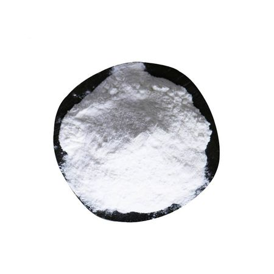

Back to Products
Amino Acid

Silk amino acids have a lower molecular weight than hydrolyzed silk protein powders as they undergo a greater degree of hydrolysis. Due to their smaller molecular weight they are more penetrating and moisturizing to skin and hair.
Facts
| Common name | Seidecosa Amino Acid / “Silk Extract” |
| Appearance | White powder |
| pH value | Between 5 to 7 |
| Solubility | Water Soluble |
| Molecular weight | about 90 to 100 DA |
Applications
- • Health care food
- • Nutritious food allaying the symptoms of diabetes
- • Nutritious food safeguarding liver to alleviate drunk caused by alcohol
- • Shampoos, conditioners, hair treatments
- • Body wash, cleansers
- • Body creams, lotions, and gels
- • Facial toners and moisturizers
- • Mascara, lipstick and color cosmetics
- • Nutritive products for brow and lash
Key Properties & Usage
- 1. The composition of silk extract is well refined through biological process to get Seidecosa Amino Acid, more than 85% of whose content are alanine, serine and glycin, is a functionally prominent nutrient with higher nutritional valuevery and easy to be permeated to the derma layer of skin and to be absorbed by skin, so as to meet the effectiveness of skin-nurturing.
- 2. The silk extract have the better nourishing function for the hair injured either by mechanism or chemicals, which can permeate to the interior of injured hair to repair or protect it.
- 3. Seidecosa amino acid have a good dissolvability with anionic, cationic, nonionic or amphoteric surfactants or multi-kinds of oily materials, as well as a good compatibility in the formula of cream or shampoo etc.Due to its action in the enzyme metabolism, Seidecosa amino acid can keep and adjust moisture, prevent skin from ultraviolet radiation, restrain splash generation, facilitate anti-aging for skin.
- 4. Among the multi-kinds amino acid contained in Seidecosa amino acid, the content of glycine is the highest. Not only can it be used as the essential materials of synthesizing protein in the internal of organism, but also as the precuror of synthesizing the glutathione (GSH, GSSG), purine and heme, which the GSM plays a certain preventive function for angiocardiopathy, carcinosis & human senility. Meanwhile, the glycine also has the function of detoxication for some aromatics which can cause cancer to human body. The rich alanine in the silk extract has the functions of promoting the metabolism of alcohol in human body to protect the liver, and of reducing the blood sugar, therefore, it also is accepted for the products of dispelling the effects of alcohol. This property of Seidecosa amino acidhave the wide application field in the development of healthy foodstuff.
| Amino Acid | (mg/ml) |
|---|---|
| aspartate | 4.287 |
| glutamate | 3.256 |
| aspartate | 20.545 |
| glycine | 55.592 |
| threonine | 1.815 |
| alanine | 44.086 |
| arginine | 1.470 |
| leucine | 0.824 |
| valine | 2.980 |
| methionine | 0.220 |
| phenylalanine | 0.893 |
| isoleucine | 0.730 |
| cystine | 0.200 |
| tyrosine | 1.359 |
| lysine | 0.814 |
| proline | 1.932 |
| Item | Index |
|---|---|
| Exterior | white powder |
| Taste | sweet & tasty |
| dissolvability | dissolved in water |
| drying shrinkage, %（W/W） | ≤2.5 |
| total N, %（W/W） | ≥14.5 |
| amino-nitrogen ,%（W/W） | ≥14.0 |
| pH value | 4.0-7.0 |
| ash, %(W/W) | ≤0.5 |
| Hg, mg/kg | ≤0.02 |
| As, mg/kg | ≤0.5 |
| Pb, mg/kg | ≤1.0 |
| aerobic bacterial count, num/g | ≤100 |
| fecal coliforms, num/g | ≤30 |
| pathogen | nondetactable |
Package:
Seidecosa Amino Acid is packed in compound plastic bag of 1 kg/25 kgs of drum. The shelf life of the product is two years under the sealing condition. It should be kept in cold, dry & no direct light place for two year’s period of quality guarantee